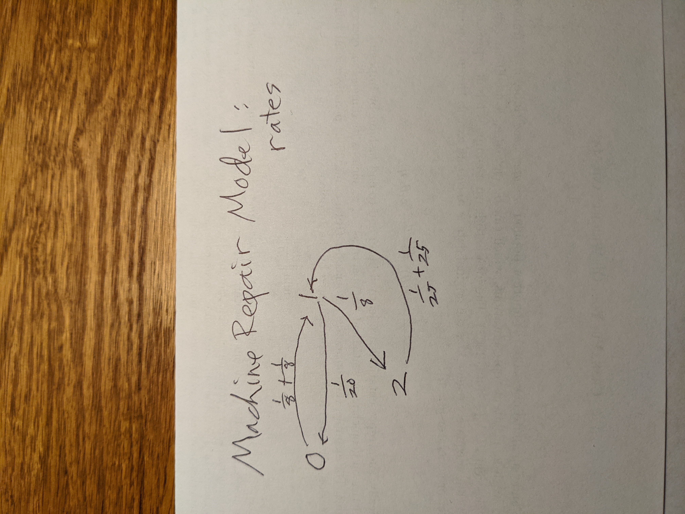

In this post, I will give more detail on the proof from Nov. 14, 1300, and explain how this relates to the Method of Stages.
Here "-1" means function inverse, in the sense that sin and arcsin are inverses of each other, and the same with square and square root etc.
FS(v) = P[G(W) ≤ v]
FS(v) = FX(v)
Now, how is the relevant to the Method of Stages?
S = qW = FX-1(W/10)
similar to Steps 2-4 above. There W's U(0,1) distribution meant that S essentially chooses from all infinitely many quantiles, with equal "probability" for each. Now here we choose from a finite number of quantiles, but again with uniform probability.
Our room request has now been approved! we have Cruess 107 from 9 to 10 (and of course 10-11), Dec. 2.
I will need a statement from each of you that states your agreement to extend the Group Quiz time from 10-11 to 9-11. If you prefer 9:30-11, please so indicate.
Please note that for legal reasons we need 100% consent on this; otherwise, we will hold the Group Quiz during 10-11.
Please notify me by e-mail, as soon as possible.
Nov. 15, 2240:Our unit on Mixture and Hidden Markov Models is finally ready, here.
Nov. 14, 1300:Please make sure you understand the following, related to the blog post describing the Method of Stages. (Note: The standard notation for the cumulative distribution function of a random variable R is FR.)
Let qt be the tth quantile of the random variable X, i.e. P(X ⩽ qt) = t. Let W have a U(0,1) distribution, and set
G = FX-1(W)
Here "-1" means function inverse, in the sense that sin and arcsin are inverse of each other, and the same with square and square root etc.
Set S = G(W).
Let's find FS.
FS(v) = P(S ≤ v) = P[G(W) ≤ v]
In the expression G(W) ≤ v, apply FX to both sides, yielding
P[W ≤ FX(v)]
But since W has a U(0,1) distribution, that last probability is just FX(v), which by definition of qt is qv.
Putting all this together, we have
FS(v) = qv
So, S and X have the same quantiles! Thus they have the same distribution.
In the blog post on the Method of Stages, I receive to deciles, but for better accuracy we should use a lot of quantiles, say for instance 999 of them. Our U(0,1) variable above is similar to our choosing one of the 999 quantiles, with probability 1/999 each.
Nov. 10, 2050:Starting next week, I will be extending my Wednesday office hours. The new time will be 2-4 pm, rather than 2-3 as before. I'm doing this mainly to better advise you on your Term Project work, but of course you are welcome to ask anything in the course.
Nov. 10, 0955:As I mentioned yesterday, I am currently preparing our unit on Mixture and Hidden Markov Models. It will make use of the R packages mixtools and hmmr. As this topic is likely to be on our Group Quiz, please install these packages on your machines.
Nov. 9, 2025:Problem A specs fixed now. Please read the entire new problem statement, mostly the same as before but with a change to how K evolves, and a new parameter p.
Nov. 9, 1535:In Problem A, I misspecified the policy under which a nurse is removed from service. I will fix that this evening.
Nov. 8, 1740:You should received your Quiz 3 scores by e-mail a few minutes ago. A few comments:
20 8.333333 13.33333 10.83333 3.333333
I figured out the source of the "Not authorized" error everyone was getting in last Friday's quiz. A perfect example of my motto, "Computers never work." Unfortunate, but there is a lesson there.
On any quiz, I first write a draft of both the questions and answers, which Jay then checks over for errors, ambiguous wording etc. Since I would not be present during the quiz, I wanted to make sure everything would run smoothly, so Jay and I got everything ready far in advance.
Sadly, though, he and I both missed a technical error in the Questions.txt file. In OMSI, a non-code problem is designated by a simple line
QUESTIONS
But a code problem gives the command for executing the code, e.g.
QUESTION -ext .R -run 'Rscript omsi_answer2.R'
This states that the file suffix will be .R, and it will be run via Rscript.
Unfortunately, we did not include that extra information. Very sorry for the error!
Nov. 8, 0830:On interactive grading of homework:
For instance, consider the Homework 2 problem in which you were to find the mean time between collisions. There is a big difference between on the one hand, seeing how to find this value, and on the other hand, implementing that math in code.
Now, LOOKING FORWARD:
"...in any class I teach, grad or undergrad, I place very high priority on the Term Project. A good paper there can more than compensate for weak performance on the quizzes [or homework]."
Groups that put in a reasonable amount of time--and thought!-- almost always receive an A or A+ grade on the project. (Individual grades may possibly be affected by the amount each team member contributed, but it is extremely rare for different members of a team to get different Project grades, unlike the Homework situation.) As explained earlier, your Project grade may have a major impact on your course grade, e.g. a B grade becoming A-.
Problem B of the Term Project is ready, and the Project specs are now complete. There will be no Problem C.
START EARLY! There is a ton of things for your team to discuss/debate, and the work in implementation will involve many unexpected speedbumps.
Nov. 7, 2125:I have now completed the directions for writing up and submitting your project. Please read these NOW, especially regarding a required section in your report that describes the contribution of each team member.
Nov. 7, 1505:When I corrected the Quiz 3 answers file yesterday, I did not copy to the 256 Web site. Fixed now.
Nov. 7, 1350:I just talked to two students in my office regarding their Homework grades. I checked my notes, and explained the reasons behind my assessment. I offered to do a regrade for one of the students, which resulted in a substantial increase in the student's grade.
A few important points:
Many thanks to Franklin for catching a couple of errors in the Quiz 3 answers file.
Nov. 6, 2010:In Problem A in the Term Project, and in fact in the entire Term Project, keep in mind that the most important aspect is your analysis. Problem A asks you to write some code, yes, but what I will look at most closely is your investigation of this modeled system; explain well your choices of what to investigate, how you investigated, and the results.
Nov. 6, 0705:News items:
Please note that I have clarified my post of Oct. 27, 1355, noting that the exponential distribution family, including the Computer Worm Model, is covered on Friday's quiz.
Nov. 2, 1905:Concerning the Q matrix:
Mainly, we will use Q to find π. As I said here in the blog yesterday, you need not understand my post of Oct. 31, 1210 in detail.
The matrix Q does enter in here, because it is a derivative, and so "small t" statements can be made, in the same way as it is stated that P(Xt = 0) ≈ 1 - λ t elsewhere in the blog. Q is a matrix of derivatives, and it plays a similar role, but do NOT feel that you need to understand this.
Again, for us, the only role Q has is to find π. Please make sure you fully understand the "flow in = flow out" arguments throughout the chapter on continuous time Markov chains.
If you do wish to learn more on the material in the blog post of Oct. 31, 1210, plug "Kolmogorov forward equations into Google."
Nov. 1, 1835:The post of Oct. 31, 1210 was intended for curiosity purposes only; you will not be held responsible for it on quizzes.
Nov. 1, 1825:Note that the coverage of Quiz 3 was announced in the blog post of Oct. 27, 1355. It will not cover autocorrelation, as I had previously thought.
Nov. 1, 0945:In your Homework writeups you were required to do a good, professional job. Now, that is even more important for the Term Project.
Among other things, that means that your names should be in the title section of your report. :-) I was surprised to see that some groups did not have this.
Also, one group displayed matrices as a LaTeX table rather than a LaTeX matrix. This of course is not acceptable.
Oct. 31, 1955:Below is my induction proof of Eqn. (9.28). I had dismissed it as easy, which it is, but now that I have given it more thought, it turns out there is a tricky part.
min(W1,...,Wr,Wr+1) = min(M,Wr+1) (Eqn. A)
From Theorm 18, M is exponentially distributed, with lambda value λ1 +...+ λrSo the right-hand side of Eqn. (A) above is the minimum of two exponentially distributed random variables--in other words, we are back to the case k=2. So,
P(M = min(M,Wr+1) = (λ1 +...+ λr) / (λ1 +...+ λr + λr+1)
But also from the inductive step
P(Wi = M) = λi / (λ1 +...+ λr)
Multiplying the last two fractions, we get
P(Wi = min) = λi / (λ1 +...+ λr+1), which was to be proved. QED.
Corrected Machine Repair Model diagram.
My department chair suddenly called me to his office, so I missed part of my office hour just now. If you wanted to see me, I will still be here until 3. Or, we can have a Zoom meeting this evening.
Oct. 31, 1210:Consider a continuous-time Markov chain. Let the matrix P(t)--let's call it the time-evolution matrix---show the probabilities of the various states at time t, i.e. P(t)ij = P(Xt = j | X0 = i) for all states i and j. Here Xt denotes the state at time t. P(t) is an r x r matrix, where r is the number of states in the chain.
We seek an analog of the discrete-time Markov chain formula
P(Xk = j | X0 = i) = (Pk)ij
(slight abuse of notation; P() on the left means "probability of" while on the right, P is the transition matrix).
First, consider the case of a Poisson process Yt, so that the states are 0,1,2,... Here Yt = k means there have been k events, e.g. k lightbulb burnouts or k customer arrivals, by time t.
P(Xt = 0) = e-λ t / 0! = e-λ t (Eqn. A)
Recall from calculus that, for x close to some point x0,
f(x) ≈f(x0) + (x - x0)f'(x0)
where ' indicates derivative.
So for small t we have
P(Xt = 0) ≈ 1 - λ t
since the derivative of Eqn. (A) is - λ t.
A more sophisticated but similar argument for our general Markov chain shows that (P now means the "time evolution matrix" from above)
P'(t) ≈ P(t) Q
where Q is the infinitesimal generator of the process, and again ' means derivative (not transpose).
Now, ignoring the fact that matrix "division" takes the form of multiplying by matrix inverse, we have, again formally,
"P'(t) / P(t)" = Q
Recalling that d/dx ln(x) = 1/x and again formally, we integrate both sides of this equation to give
ln[P(t)] = tQ
and then
P(t) = exp(tQ)
Here we have the "exponential" of a matrix. What would that even mean?
Well, using the standard Taylor series,
exp(x) = 1 + x/1! + x2 / 2! + x3 / 3! + ...
we then have, again formally,
P(t) = I + tQ + (tQ)^2 /2 + (tQ)3 / 6 + ...
All this can be done with careful math, but the above is the intuition, and we now have our continuous analysis of the discrete time Pk.
Oct. 31, 1110:Someone pointed out after class a couple of errors in the diagram I drew for the Machine Repair problem. I'll post a correction later today.
And in walking back to my office after class, I realized I was missing a "t" in the "matrix exponentiation" example. I'll post a correction on this too.
Oct. 30, 2300:Problem A of our term project is ready. It is rather open-ended, but feel free to run your plans by me if you'd like some early feedback.
Oct. 30, 1940:My blog post of Oct. 28, 1625 is now ready for public consumption. Please do a careful read, and let me know if you have any questions.
Oct. 30, 1910: Oct. 30, 1910:The term project specs file is not ready yet, even in part. I hope to have some of it ready later this evening.
Oct. 30, 1720:I started composing Hwk 3, the last part of which was to be the first part of your term project. However, we are about to enter November, and I always find that that month goes more quickly than I plan for. :-) It is one day shorter than most months, and the Thanksgiving holiday always makes scheduling difficult in multiple ways.
So, I've decided to simply have a slightly larger Term Project and skip Hwk 3. I will be posting it in the next few days.
Tentatively, I plan to have the project due at the start of Week 10, and then conduct have interactive grading during that week.
Oct. 29, 1020:Typo in Eqn. (9.33). Upper value of the range of summation should be g-2, not g-1.
Oct. 29, 0945:My blog post of Oct. 28, 1625 is still a work in progress, but ready to read. I'll be adding a picture of a specific example, so it is still not quite done, but I recommend that you read it now and then again after I add the picture.
TBH, this is a pretty tough concept. But with patience plus the added picture, I think you'll find that it really cements your understanding of continuous-time Markov chains.
Oct. 28, 2110:Please note my post of today, 1625, is still a work in progress! Don't read it yet.
Oct. 28, 1625:The Method of Stages is a technique that can be used to circumvent the requirement that holding times in continuous-time Markov chains be exponentially distributed. The idea is actually rather simple.
Say we have a chain, Corig which is non-Markovian in continuous time but is Markovian in discrete time. The latter means that when a jump is made out of a state, it picks the new state in a memoryless manner. (BTW, the path taken at the jumps is called the embedded chain.) We will create a new chain, Cnew, that is Markovian in continuous time, and works approximately the same as Corig. We will do this by what the original creators of this idea called "fictional" states.
Let S be the holding time in a state m in Corig. We will first consider the case in which S is a constant w, i.e. P(S = w) = 1.
Recall that the distribution of a sum Y of v iid exponential random variables is called Erlang. Denote the common "λ" value for those random variables by l. Then EY = v/l and Var(Y) = v/l2. The coefficient of variation of Y, is defined to be sqrt(Var(Y)) / EY = 1 / sqrt(v). In other words, for large v, Y will be pretty close to constant, around the point v/l, its mean. We can choose l and v so that v/l is near w, with v large enough so that the spread of Y around w is small.
In other words, if S is constant, we can approximate it as the sum of v exponential random variables. Let's call them R1,...,Rv. So we think of "states" m1,m2,...,mv, which we go through sequentially, then leave for some other state that is analogous to one in Corig. Let's refer to this new chain as Cnew. Thene
Here is an example.
State 1 in Corig is now states 11, 12 and 13 in Cnew. A jump from some other state j that would go to this state 1 in Corig would now go to state 11, then to 12 and 13, then out to another state. For the sake of simplicity, we have v =3 in the picture, but it may need to be much larger.
Now consider the case in which the holding time S at a state, say state i, in Corig is not constant, but takes on just two values, say 0.4 and 1.7 for concreteness, with probability 0.35 and 0.65 respectively. We would replace state i by two "branches" of states i11, i12,..., i1v1 and i21, i22,..., i2v2. A jump from some other state j would go to i11 with probability 0.35 or to i21 with probability 0.65.
Going one step further, any random variable can be approximated by its quantiles. We could, say, approximate S by its deciles, say its 10th, 20th, 30th,..., and 90th percentiles. State i would now have 9 branches, ist, u = 1,2,...,9 and t = 1,2,...,v, with the probability of entering any branch being 1/9.
All this comes at the expense of having a lot more states, which may result in computational issues, but at least we can use Markov chain methods on non-Markovian processes.
Oct. 28, 1315:Well, here is an interesting turn of events. :-)
Today in class I mentioned the Method of Stages. I hadn't planned to discuss it, but in emphasizing that the distributions in the Machine Repair Model needed to be exponential, I suddenly thought, "Well, I ought to tell them that there is an alternative," so I brought it up.
And then, after class, I thought, "Hey, this is a good topic for their term project." And indeed it is.
So, later today, I will post to the blog a more detailed explanation of this method. However, it will not be in any of the quizzes.
Oct. 28, 0930:Earlier I had mentioned here that we will hold Quiz 3 in Nov. 5. Of course, I meant Friday, Nov. 4. Note that I will be out of town, so Jay will conduct the quiz.
Jay will set the turn-in time for the quiz at 10:55, at which time he will close the server. Please note that you must submit all your work before that time! Also, keep in mind that each submission for a given problem overwrites the last one, so there is no harm in frequently submitting your work during the quiz; I highly recommend that you do this.
Oct. 27, 2300:I have begun writing the specs for Hwk III. It will have at least one more problem, and I may improve some of the phrasing in Problems 1 and 2, but basically those two are ready, if you want to get a head start on Hwk III.
Oct. 27, 1355:We will have Quiz 3 on Friday, Nov. 4. I will be out of town, and Jay will administer the quiz. Coverage:
Sorry, no class today.
Oct. 23, 1305:Here is a handy trick that may come in useful in our Term Project:
> ls() [1] "bkd" "db1" "dba" "dbb" "dbcurr" "dbl" [7] "dbsrci" "dsc" "evalr" "gtd" "ksList" "ksProto" [13] "lsp" "lst" "odf" "pr2file" "print.ksr" "qeml" [19] "reloadPkg" "rt" "srcname" "sstd" "upd" > eval(parse(text='ls()')) [1] "bkd" "db1" "dba" "dbb" "dbcurr" "dbl" [7] "dbsrci" "dsc" "evalr" "gtd" "ksList" "ksProto" [13] "lsp" "lst" "odf" "pr2file" "print.ksr" "qeml" [19] "reloadPkg" "rt" "srcname" "sstd" "upd"
Here I put a command (ie, a function call) into a string, then executed that string. In the example here, there would be no point in doing this, but the ability to do so programmatically often is very useful. One builds up a command in string from from, say, user-input variables, then executes it.
Oct. 20, 2310:I just e-mailed out the Quiz 2 grades. The results were generally good, very nice to see. Please see the solutions in the Exams/ directory on our Web site.
I must repeat the importance of using your official UCD e-mail address on all your work, as my records are indexed that way. I just noticed that in this quiz, someone gave their e-mail address as being at xyz.edu!
Oct. 20, 1720:Except for one case of make-up grading, I am finished, and will send you your grades probably tomorrow. Overall, I was pleased with how you did; almost everyone did well.
I will be grading your Quiz 2 this evening.
Oct. 19, 1955:The prblem statement for Problem 4 in the homework stipulated that you use the Law of Total Variance (LTV). But it apears that some students are still having difficulty with the material on p.128 of our textbook, so I will remove the LTV requirement. (You can use LTV for Extra Credit; if so, please notify me.)
Note that Eqn. (6.38) is the same as
ETij = E[ E(Tij | U)]
Adapt this and then use the formula Var(X) = E(X2) - (EX)2.
Oct. 18, 1915:In the 1 hour it took me to drive home today, I composed an entire draft of Quiz 3. (In my mind, of course, not typing. :-) ) THIS DRAFT WAS HEAVILY WEIGHTED TO ISSUES RELATED TO THE AUTOCORRELATION PROBLEM IN THE HOMEWORK. So, make sure you do an extra careful job on this particular problem. And, note my related comment about simulation for that problem in my blog post of Oct. 17, 2110.
Oct. 18, 1310:Regarding autocorrelation:
In composing this problem, I was assuming that (a) most students would not have prior exposure to the concept of autocorrelation, but that (b) all students would have prior exposure to correlation. I think (b) turned out not to be true, and since even the Wikipedia is rather inconsistent (see below), I am writing this blog post.
Note:
ρ(U,V) = Cov(U,V) / (σU σV) = (μUV - μU μV) / (σU σV)
Note that correlation takes values only in [-1,1].
By the way, this is called Pearson correlation, named after the inventor long, long ago.
(E[Xi Xi+k] - E[Xi] E[Xi+k]) / sqrt(Var(Xi) Var(Xi+k))
(E[X0 Xk] - E[X0]2) / Var(X0))
μUV
Same correlation we got before, note. Nothing has changed other than a shortcut to the same computation.
The autocorrelation of the stochastic process reduces to
E[X0 Xk]
There are some analysts who use the simplified form E[X0 Xk] even without standarization. This is fine as long as the analyst is aware of this and will be able to interpret the results, which can be any number in (-∞,∞).
Here are some check values for Problem 2, and some advice.
test <- function(m) # random walk on 1:m
{
P <- matrix(0,nrow=m,ncol=m)
P[1,1] <- 0.5
P[m,m] <- 0.5
for (i in 1:m) {
if (i < m) P[i,i+1] <- 0.5
if (i > 1) P[i,i-1] <- 0.5
}
P
}
> P20 <- test(20) > MCautocor(5,P20) [1] 0.9337406 > MCautocor(9,P20) [1] 0.8862488 > MCautocor(15,P20) [1] 0.8208981
Note that with larger k, the correlation goes down. Make sure this makes intuitive sense to you.
Before continuing, I wish to urge you to write the simulation. In doing so, you'll be able to reuse some of your code in the term project.
My call form for the simulation was
sim(k,P,nReps)
Within sim() I have a function
oneSamplePath <- function()
{
...
}
Note that since this function is defined within sim(), the local variables (including the arguments) of sim() are global to this inner function.
In stochastic process terminology, a sample path simply means taking a "ride" on a Markov chain one time, for however many time periods we like. So, with P20 as above, I might start, say, at 3, then go to 2, then 3 again, then 4, then 5; this would be a sample path of 5 time periods. I had a call to oneSamplePath() to go through k+1 periods.
I set up sim() to generate nReps sample paths:
paths <- replicate(nReps,oneSamplePath())
The replicate() function in R does what it says, executing the code the requested number of times. So my call
sim(8,P20,10000)
generated 10000 sample paths. So I had 10000 X0s, 10000 X1s etc., through 10000 X8's. Now I can find the correlation between the Xi, in the final line of sm(), calling R's correlation function:
cor(t(paths))
You may find it helpful to re-review the review in Chapter 10, pp.191-195. These basic facts will arise a lot.
Oct. 17, 1240:Here is a crisper version of the derivation I rushed through at the end of class today:
After Eqn. (9.18), write
R'(0) = R'(u) / R(u) = d/du [ln(R(u)]
since d/dx ln(x) = 1/x. For convenience, write c = R'(0), so we have
c = d/du [ln(R(u)]
Integrating both sides, we get
cu = ln[R(u)] + b
for some constant b. So,
R(u) = exp(cu) exp(-b)
So the density of V is
fV(u) = d/du [1 - R(u)] = -c exp(cu) exp(-b)
A density must be nonnegative, so we see c < 0. A density also must integrate to 1.0. This forces exp(-b) to be 1.
So, the memoryless property for a continuous random variable forces the variable to have an exponential distribution.
Oct. 16, 2305:In my post of Oct. 9, 1000, the symbol p in state1xmit() should be p1. Sorry for the typo.
This is "Computers never work" in reverse! I had tested my code before making the blog post, and it ran properly in spite of the typo--even though it shouldn't have run. Why? I had originally named the quantity 'p', and the old version was still there.
Oct. 16, 1410:The range of indices in Eqn. (6.42) should be 1 ≤ i ≤ n-1. Concerning the code that follows, writing out the equations by hand for the case n = 3 should help you see what the code is doing. Please keep in mind that this equation and the associated code is only for the special case of solving for pin, not the general pij.
Oct. 15, 1410:I'm fine today, and tested negative for Covid. See you in class Monday.
Oct. 14, 0430:We will not have class on 10/14. I got my Covid booster yesterday, and seem to be experiencing a reaction, with a mild fever.
We may have to hold class and interactive grading on Zoom next week.
Oct. 13, 2045:A student asked me about Eqn. (6.41). Shouldn't that "1 +" be "p_{ij} +", he asked.
Actually, that 1 is correct. Look at (6.38), drawing upon (6.39) and (6.40). Break down the sum in (6.38) from sum_k to
# call this Eqn. A sum_{k != j) p_{ik} stuff + sum_{k = j) p_{ik} stuff +
where "stuff" means E(T_{ij} | U = k).
That second term in (A) is of course just p_{ij} stuff. Then (6.38) becomes
# call this Eqn. B sum_{k != j) p_{ik} stuff + p_{ij} stuff
And "stuff" is given by (6.39) and (6.40). So (B) becomes
# call this Eqn. C sum_{k != j) p_{ik} (1 + E(T_{kj}) + p_{ij} 1
Part of that first term in (C) is
sum_{k != j) p_{ik} 1
i.e. all the p_{ik} other than p_{ij}, but the latter is picked up in the second term in (c). Together, their sum is sum_{all k) p_{ik} = 1, which is the 1 in (6.41).
Oct. 13, 1930:I've clarified Problem 3.
Oct. 11, 2050:Quiz news:
Following up on my post of Oct. 10, 1255, use braces for grouping, just as in writing .tex files. E.g. write
p_{ij}
instead of
p_ijOct. 10, 1255:
Occasionally I will ask you in a quiz question to supply a mathematical expression, in a NON-coding question. Please use ^ for exponentiation, _ for subscripts, and juxtapostion for multiplication (NOT *). Denote transcendental functions for their R names, and green letters by their names.
For instance, the normal/Gaussian density, 0 mean and sd 1:
1/sqrt(2 pi) exp(-0.5(t^2))Oct. 9, 1000:
Cally pointed out that the caculated pi vector in p.124 are incorrect.
> findpi1(transmat) [1] 0.3682030 0.4497337 0.1820633
Since Eqn. (6.23) is rather complicated, I decided to check via simulation. Here is the code below; make sure you understand both the model and the R code.
state <- 0
sim <- function(p1,q1,n) # n = number of simulated epochs
{
p1 <<- p1
q1 <<- q1
pi <- rep(0,3)
for (i in 1:n) {
if (state == 0) state0next()
else if (state == 1) state1next()
else state2next()
pi[state+1] <- pi[state+1] + 1
}
pi/n
}
# the functions state0next(), state1next() and state2next() simulate the
# actions at states 0, 1 and 2
state0next <- function()
{
state <<- rbinom(1,2,q1)
if (state == 2) state2xmit()
else if (state == 1) state1xmit()
}
state1next <- function()
{
if (runif(1) < q1) {
state <<- 2
state2xmit()
} else state1xmit()
}
state2next <- function()
{
state2xmit()
}
# the functions state0xmit(), state1xmit() and state2xmit() simulate the
# actions during the attempted transmission phase at states 0, 1 and 2
state1xmit <- function()
{
if (runif(1) < p) state <<- 0
}
state2xmit <- function()
{
nTrySend <- rbinom(1,2,p1)
if (nTrySend == 1) state <<- 1
}
sim(0.4,0.3,1000000)
Note that I am storing 'state' as as global variable. There are many people who consider globals, both in R and in general, to be "evil." I don't have this view; I think the use of globals can make code much clearer and easier to follow. Note, though, that this meant I needed to use <<- instead of <-
Oct. 8, 1220:Soon we will have interactive grading for Homework 1. Please note:
Continuing with this morning's post on Problem 4, another approach would be to use row and column names on your matrix. Here is how they work:
> m <- rbind(1:2,c(5,3))
> m
[,1] [,2]
[1,] 1 2
[2,] 5 3
> rownames(m)
NULL
> rownames(m) <- c('a','b')
> rownames(m)
> m
[,1] [,2]
a 1 2
b 5 3
> colnames(m) <- c('c','d')
> m
c d
a 1 2
b 5 3
> m['a','d'] <- 3
> m
c d
a 1 3
b 5 3
So, you might for instance keep everything for ETij in a matrix rather than a vector, and set row and column names like '1,1', '1,2' etc.
Oct. 6, 1805:Another exhortation to start Homework 2 early!
As you saw, Quiz 1 largely consisted of problems similar to Homework 1. The same will be true for Quiz 2 and Homework 2, both in terms of math and R programming. So, starting Homework 2 early is very wise.
Oct. 6, 0915:In Problem 4 of the homework, you will be setting up systems of linear equations, which you can solve using the solve() function once you set up the proper matrix. However, the latter action will be a bit of a challenge, as follows.
In our texbook, we set up a matrix to find the π vector. The names of the rows of that matrix are 1,2,...,n, where n is the size of the state space of the Markov chain. The same is true for the columns. But in Problem 4, the names of the rows--in your mind--will be pairs of integers, and again the same for columsn. Yet as far as R is concerned, the row and column names are single integers. How can we deal with this?
First, note that R uses column-major order to store matrices and arrays (the latter are "matrices" with more than 2 dimensions). This comes from the old S language (R's "ancestor"), which was based on FORTRAN. C/C++ uses row-major order. No advantage to either over the other, but one must understand how it works.
Consider the code
> u <- rbind(1:2,8:7))
Error: unexpected ')' in "u <- rbind(1:2,8:7))"
> u <- rbind(1:2,8:7)
> u
[,1] [,2]
[1,] 1 2
[2,] 8 7
> v <- as.vector(u)
> v
[1] 1 8 2 7
That matrix u consists of 4 numbers, stored column-by-column. For example, u[1,2] will be in the third memory word in the space allocated to u.
And of course one can go the opposite direction:
> w <- matrix(v,nrow=2,ncol=2,byrow=FALSE)
> w
[,1] [,2]
[1,] 1 2
[2,] 8 7
(Setting byrow=TRUE would have resulted in filling w row-by-row rather than column-by-column.)
The point is that, in creating your matrix m to represent your system of equations, you may find it convenient to use a similar storage scheme.
Oct. 6, 0855:Homework 2 news:
Announcements:
I have put a draft of Homework 2 on our Web page.
Oct. 4, 1735:Various announcements:
Office hours:
As I mentioned in my Sept. 27, 1910 blog post, I will not be able to meet my office hour tomorrow, due to a committee meeting. I will be available after class for brief questions.
E-mail addresses:
Please note that all of my records for a course are indexed by student e-mail address, specifically a student's official UCD address that appears in my class roster from the Registrar. I have scripts similar to OMSI that I use to gather together a student's data when I assign course grades at the end of the quarter. Thus it is important that my records for you use your official address.
In your use of OMSI, make sure to use this address. This is quite easy to check. As you know, each time I make a new blog post, I send you e-mail announcing it. The address used for this e-mail is your official UCD address.
If you submitted yesterday's quiz using some other address, please let me know so I can correct my records.
Oct. 3, 2250:I've finished grading Quiz 1, those who submitted electronically. As noted, I hope to handle the paper submissions tomorrow.
I was very pleased to see that most students did well on Problem 4. Some may have gotten caught up in minutiae in Problem 3, but if you get Problem 4 right, you really do have a good grasp of the essence of the Law of Total Expectation.
Solutions are posted here .
Oct. 3, 1945:One of my slogans in the class has been "Computers never work!" :-)
We had four people turn in solutions on paper, apparently because they could not get OMSI to work. Presumably they did an OMSI dry run on their own machines, not with Jay's dry run server that he had running last week. (If you had some other problem, please let me know.) They then had problems with the VPN.
This once again shows that any computer system, hardware or software, must be tested in the same setting as one will have in real use. Things can still go wrong, of course, but one must do one's best to minimize those possibilities.
Jay, please set up a server again, so that those who had problems can test their use of OMSI under realistic conditions.
Please remember that I also use OMSI to do the grading of your quizzes. OMSI presents me with a student solution, and if it is R code, OMSI runs it for me. OMSI automatically keeps records for me, etc. So, I should be able to grade everyone this evening who submitted via OMSI. I'll try to get to the paper copies tomorrow.
Quiz notes:
Jay and I have now both done thorough testing of Lan's new version of OMSI, which allows the test taker to specify multiple PDF file to view via OMSI.
The server is unchanged, and the changes to the client are pretty small. Run by typing
python OmsiGui.py pcWhatever.cs.ucdavis.edu PortNum YourEmailAddr QuizNum PDFOpenCmd1 PDFOpenCmd2 etc.
As I am fond of saying, "Computers never work." So, JUST IN CASE, keep a copy of the old OMSI on your machine if an "emergency" arises.
Oct. 1, 2105:Some tips on Problem 3:
Just to make it official: Quiz 1 will be held this coming Monday. Same coverage, i.e. it excludes Markov chains.
Actually, the postponement will turn out to have two advantages:
The footnote below Equation (6.9) says that a sufficient condition (A is a sufficient condition for B means A => B) for Equation (6.5) to hold is that the chain be aperiodic. A different sufficient condition is that all elements of the transition matrix P are > 0 (Perron-Frobenius Theorem).
Sept. 29, 1955:Quiz news:
I've been asked a couple of times now about use of iPad notes in our quizzes. A few points here:
A few days ago, I added an extra office hour in order to accommodate students in STA 209. However, I didn't realize that the change didn't fix the problem. So, my new office hours will be:
M 1-3, W 2-3
Sept. 29, 0930:In running OMSI with the server on CSIF, make sure that you have set up the VPN. Of course, you cannot connect without it.
Sept. 28, 1930:If OMSI is giving you an error message referring to Tk, your machine may not have the latter. Tk is what drives Python graphics.
I would suggest you install Anaconda, a full Python package. This will not only get you Tk, but also should avoid Python's notorious environment problems. Be sure to configure your system's search path, so that when you type "python", the Anaconda Python will be the one to run.
Obviously, you need to get this resolved SOON. Please contact Jay if you still have problems.
Sept. 28, 1900:In today's lecture, I had hoped to elaborate on my "long-run frequency" definition probability, which is presented in Chapter 1 of the full PSB book, but I ran out of time. As I've said, I take this approach because I believe the usual set-theoretic treatments obscure the intuition. I believe this alternative approach will help you, both on the current Problem 1d but also in various concepts that will arise in the course.
I like to use a "notebook" metaphor. For instance, consider tossing a coin, and ask what P(heads) = 0.5 means. We toss a coin once, and record H or T on line 1 of the notebook. We toss the coin again, and record H or T on line 2, etc. P(heads) = 0.5 means that if we look at infinitely many lines in the notebook, the long-run proportion of heads is 0.5.
Say X1 and X2 are independent and each have an exponential distribution with λ = 1. Define a new random variable T = min(X1, X2). What does the notebook look like here? There will be columns labeled X1, X2 and T. The first four lines, say, might look like this:
line X1 X2 T 1 0.3 1.2 0.3 2 6.8 1.3 1.3 3 0.5 0.2 0.2 4 8.4 9.9 8.4 ...
The long-run average on the X1 column will be 1/λ = 1. The same will be true for the X2 column, but NOT for the T column; the latter will be something less than 1.0. In fact, in our analysis of continuous Markov chains later in the course, it will be seen that ET = 0.5. Don't worry now about why this is true. Instead, the main point is that one cannot say, "T is always equal to one of the Xi, and they have mean 1, so T must also have mean 1." Not true.
Sept. 28, 1610:Correction: I misstated Problem 1d. Sorry, fixed now, and due date pushed back.
Sept. 28, 1130:Correction: In defining random walk with reflecting barriers today, I wrote p_-10,-9 = 1/2. I should have written 1 rather than 1/2. The latter would make the chain aperiodic, and I was trying to give an example of a periodic chain.
Sept. 28, 0920:If you wish to avoid doing the integration in Problem 2 by hand, you can use symbolic math packages (also known as computer algebra systems (CAS)), such as Ryacas and caracas. For example:
install.packages('Ryacas')
library('Ryacas')
yac_expr("Integrate(x) Exp(-(lamb*x))")
or
install.packages('caracas')
library(caracas)
sympy <- get_sympy()
x <- sympy$symbols('x')
f <- "exp(-lamb*x)"
sympy$integrate(f, x)
Sept. 27, 1910:
Regading office hours:
A quick note regarding a subtlety in R. Consider this code, in which we want to find Var(X) for a random variable X that is equal to 1 or 5, with probability 0.5 each:
> x <- c(1,5) > var(x) [1] 8 > # Var(X) = E[(X - EX)^2] = E[(X - 3)^2] = E(2^2) = 4 > mean((x - mean(x))^2) [1] 4 > mean(x^2) - (mean(x))^2 [1] 4
So, R gave us a value of 8 when it should be 4. What happened?
In evaluating Var(X), R is treating x as a sample of size 2 from some population, with the goal of estimating the population variance σ2. Classical stat does this as
Σ n i=1 (xi - xbar)2 / (n-1)
with xbar being the sample mean, Σ n i=1 xi / n
Dividing by n-1 instead of n is done for something called unbiasedness, debatable but certainly not what we want here in our nonsampling context. Here, c(1,5) IS our population.
Note too that even that value of 4 would be wrong if X = 1 and X = 5 have different probabilities, say 0.8 and 0.2:
> probs <- c(0.8,0.2) > sum(probs * x^2) - (sum(probs * x))^2 [1] 2.56Sept. 27, 1340:
Each of the famous distribution families in our undergrad probability review have R functions available, in fact four of them, with initial letters d, p, q and r. The documentation states that 'd' stands for "density," which is a little misleading.
For a discrete distribution family, the 'd' gives the probability mass function, i.e. probabilities of individual data values. These are not density functions in the usual sense of continuous random variables. (This is a measure theory thing, so the word density is technically correct but not in the sense of undergrad probability.)
Also, the argument x is ill-described as "a vector of quantiles." This makes sense for the 'p' and 'q' functions, but for 'd' the argument simply is the values whose probabilities one wishes to find. Example:
# probabilities of getting 4, 5, 6 or 7 heads out of 10 coin tosses > dbinom(4:7,10,0.5) [1] 0.2050781 0.2460938 0.2050781 0.1171875Sept. 27, 1035:
Quiz notes:
Homework notes:
Jay asked me if you are allowed to submit .Rmd files (R Markdown) rather than .R. The answer is no.
I need to be able to run your code, including running it inside the R debugging tool. BTW, this is a great way in general, not just in R, to learn about someone else's code--run the code one line at a time from within a debugging tool. That would be impossible from within R Markdown.
Sept. 26, 2135:I really don't want you to spend a lot of time on Problem 1c. Problems 2 and 3 are so important. So, in Problem 1c, just do the first part (a double integral). If you want to do the triple integral, you'll get Extra Credit, but again, give priority to the other problems.
Sept. 26, 2050:In Problem 1c of the homework, you are finding probabilities involving continuous random variables. A probability involving T1, T2,...,Tk is computed by integrating the joint density function of the k variables over the region indicated by the desired probability. If the Ti are independent, then their joint density is the product of their marginal, i.e. individual, densities, in this case a product of exponential functions. But what about the limits of integration?
Again, this may be something you've probably forgotten from your undergrad days. So, I've written up (literally written, by hand) a tutorial on this.
Sept. 26, 1825:Note that it is absolutely critical that you have a copy of our textbook for the quizzes. Quiz questions will often refer to a page in the book.
As I've said before, I recomend that you have a hardcopy of the book. You are allowed to bring any printed matter to the quizzes, not just our textbook but also your notes, your undergrad probability book (or any, for that matter), etc.
OMSI allows you to specify one PDF document to be viewed via OMSI. (You are not allowed to access the Internet etc. during the quizzes; your OMSI window must fill your screen at all times.) That could be the PDF form or our text, say, or spliced-together miscellaneous materials.
Once again, make sure nothing goes wrong with OMSI on Quiz 1. Do a full dry run, either on your own or with Jay's server (should be up soon; he will announce it). In the latter case, you may wish to confirm with him afterward that your uploaded solutions did reach his server.
As mentioned, mathematical quiz problems will require R code as the form of your answer. Do not do algebraic simplification, because having the full code will show your thinking, and may result in your getting partial credit if your answer is wrong.
Some quiz problems will be qualitative in nature, and thus will not involve R code. These could be fill-in-the-blank, multiple choice etc.
Sept. 26, 1545:In one of the examples in Saturday's blog post, I had Y, given X, being geometrically distributed with success probability X. That's impossible, since a probability must be in [0,1] and Erlang random variables take values from 0 to ∞. So, I changed it to Y | X having an exponential distribution. Profuse apologies!
Also, in my office hour today, it arose that some students may not know/remember multivariate calculus very well, in terms of multiple intergrals. I'll write up a tutorial and post it this evening.
Sept. 26, 1500:A student pointed out some broken links in the homework specs and the syllabus. I've fixed them now.
There also appears to be an error in Saturday's blog post. Will fix and announce on the blog by this evening.
Sept. 26, 1120:Not sure I mentioned this before: All quizzes are open book.
You are responsible for the reading up through the coverage point of a quiz. In our case here, there were two items you are expected to cover on your own--the linear algebra review and R. You will be using R on the quizzes and homework.
Someone asked about the term period of a state after class. I'll post more on this later today.
Sept. 24, 1240:This will be a long blog post, but one that will be very useful to you in Hwk 1 and in the course as a whole. Please bear with me.
Iterated expectation and varianceYesterday we covered the PSB chapter titled, "Stop and Review: Probability Structures," a review of some major aspects of undergraduate probability. That chapter ended with Equations (10.28) and (10.29), iterated expectation. Treating conditional expected value as a random variable (to be explained on Monday), the equations say
EY = E[ E(Y|X) ]
The analog for variance, also to be covered on Monday, is
Var(Y) = E[ Var(Y|X)] + Var[ E(Y|X)]
On Monday we will cover those equations in detail, in SRC pp.52-54. But as I said yesterday, you'll need this material for Hwk 1, so I want to discuss of this here in the blog now.
Probability and expected value as long-run quantitiesAs I explained yesterday, most probability books, even at the undergraduate level, define things in terms of set theory, i.e. unions and intersections. I believe this destroys the intuition. Instead, I define things this way:
If X is a discrete random variable, then
EX = ∑c c P(X = c)
where the summation is over the values that X can take on.
(This actually follows from the "long-run frequency" definition; see the full book if you are curious.)
For the conditional case:
E(X | B) = ∑c c P(X = c | B)
Now, what about the expected value of a function of X, E[g(X)]? Say g is the squaring function.
It again follows immediately from the "long-run average" definition, in this case the long-run average of X2, that
E[g(X)] = ∑c g(c) P(X = c)
Example: Say X = 1 or 2, with probability 0.2 and 0.8. Let's find EX and Var(X).
EX = 1 (0.2) + 2 (0.8) = 1.8
Var(X) = E(X2) - (EX)2 = [12 (0.2) + 22 (0.8)] - 1.82 = 0.16
For a continuous random variable X, sums become integrals, and P(X = c) becomes the density fX (c):
EX = ∫ c fX(c) dc
E[g(X)] = ∫ g(c) fX(c) dc
Iterated expectation, "Pythagorean Theorem" for variance (PTFV)Example: Say we roll a fair die, resulting in X dots. Then we toss a fair coin X times resulting in Y heads. Let's find EY and Var(Y).
The review recalled for us the fact that a binomial random variable with n trials and success probability p has mean np and variance np(1-p). So
E(Y | X) = X (0.5) = 0.5 X
and
Var(Y | X) = X (0.25)
And of course,
P(X = c) = 1/6, c = 1,2,...,6
Now,
To get EY, apply EY = E[ E(Y|X) ]:
EY = E(0.5X) = 0.5 EX = 0.5 (3.5) = 1.75
What about the variance? Apply Var(Y) = E[ Var(Y|X)] + Var[ E(Y|X)]:
Var(Y) = E[ 0.25 X] + Var(0.5 X) = 0.25 EX + 0.25 Var(X) = 0.25 (0.5) + 0.25 Var(X)and
Var(X) = E(X2) - (EX)2 = [12 (1/6) + 22 (1/6) + ... + 62 (1/6)] - 3.52
Example: Say X has an Erlang distribution (see our review), with r = 3 and λ = 1. Also, suppose that given X, Y has an exponential distribution with λ = X. (Both the Erlang and exponential distribution families have the symbol λ in their formulas, but with two different distributions here, X and Y|X, we have separate λs.) Find EY and Var(Y).
We'll need the mean and variance of Erlang distributions. Unfortunately, the review doesn't show the mean and variance for the Erlang family, but since an Erlang random variable is the sum of r iid exponential random variables, we can get our mean and variance for X:
The review does tell us that the mean and variance of an exponential random variable are 1/λ and 1/λ2. For independent random variables both means and variance are additive. So a sum of r independent exponential random variable has mean and variance r/λ and r/λ2.
So
E(Y | X) = 3/X
and
Var(Y | X) = 3/ X2
So we can obtain our desired quantities. first, the mean:
EY = E{ E(Y|X) ] = E (3 / X) = 3 E(1/X)
This is E[g(X)} with g(t) = 1/t. So
EY = ∫t (1/t) f(t) dt
where f is the Erlang density for r = 3 and λ = t. (We can do the integral as an integration by parts if we are hardy enough, but otherwise just use R's integrate() function.)
Var(Y) is then computed using PTFV and integrals similar to the above.
Sept. 25, 1225:We will have our first quiz on Friday, September 30. It will cover the undergraduate material review, especially the material on properties of conditional expected value and variance, which we began yesterday and will treat in detail on Monday. Quiz 1 will not cover Markov chains, which we will begin on Wednesday.
Though we will usually run quizzes for 25 minutes, spending the remaining 25 minutes on lecture, Quiz 1 will use the full 50-minute class time. This will be done in recognition of your being new to the OMSI system, which we will use for our quizzes. Our TA Jay will set up a server for you to do a dry run of OMSI, but I strongly urge you to set up your own server and dry run.
As noted, the quizzes will count as 50% of your course grade. I know that that may make some students who have a lesser background in undergraduate probability a little nervous, but let me emphasize:
Later today I will make another blog post, aimed at preparing you for Hwk 1.
Sept. 24, 0950:My office hours will be MW 2-3, 3053 Kemper. Feel free to drop by to ask about the homework or anything else.
Sept. 22, 2200:I have shortened the item on the reading list titled, "Conditional expectation as a random variable."
Sept. 22, 2100:The final version of Homework 1 is ready!
Sept. 22, 2015:Good evening, everyone.
I'm in the midst of finalizing Homework 1 . There will be a total of 3 problems, with Problem 1 being the one I assigned over the summer. Problem 2 will be a straightforward application of iterated expectations. We will begin that topic tomorrow (the topic order in our class will be that of the reading list ).
Problem 3 will look quite easy, just an R simulation. However, I think you will find it thought-provoking, and I hope it sparks a lively discussion in your homework group.
Keep in mind throughout the course:
You are welcome to come to me for hints on the homework. Of course, you should seek my help only after your group has given the problem thorough thought, but I am always there for you if need be. Everyone should be able get a good grade on the homework.
As I said yesterday, we will take the first week to form groups. If you do not form a group yourself, Jay will assign you to one by next Wednesday morning; in the mean time, work individually. (Line from an old song: "Seems to me; We've got to solve it individually")
Sept. 21, 2230:As most of you know, I assigned Hwk 1, Problem 1 over the summer, here. But did not set a due date. Since we will not have homework groups fully set until September 28, I'll set the due date to Monday, October 3. I will add a Problem 2, probably tomorrow.
I'll also need to set office hours. I'm a faculty adviser for undergrads, and need to wait a bit until that schedule is set. But in the mean time, if you need to see me, just let me know and we'll set up a time.
Sept. 21, 1450:The R language has a number of built-in functions to compute density/probability mass function, cumulative distribution function, quantile function and random number generation, for each of several well-known distribution families. Type
?dnorm
to see the man page for the normal distribution family.
Make sure you are adept at using these functions, in the case of the famous distribution families in pp.193-194 of the PSB reading. Of course, also make sure you are good at using R's linear algebra functions, PSB Appendix B, as well as the integrate() function.
Sept. 21, 1105:Someone asked me after class about the weights I'll give to the various components of the course in assigning course grades, in particular the term project.
The syllabus says:
Tentatively, I expect to give 50% weight on the exams, and 50% on the assignments (problem sets, term project).
Two important points:
Submitting a really good term project will result in a MAJOR boost to your course grade.
{kind=link}